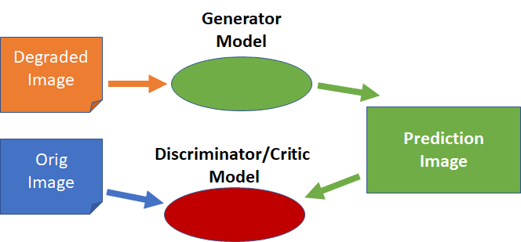

<!doctype html>
<html lang="en">
    <head>
        <meta charset="utf-8">
        <meta name="viewport" content="width=device-width, initial-scale=1.0, maximum-scale=1.0, user-scalable=no">

        <title>Repairing Images without GAN</title>
        <link rel="stylesheet" href="./css/reveal.css">
        <link rel="stylesheet" href="./css/theme/moon.css" id="theme">
        <link rel="stylesheet" href="./css/highlight/zenburn.css">
        <link rel="stylesheet" href="./css/print/paper.css" type="text/css" media="print">


    </head>
    <body>

        <div class="reveal">
            <div class="slides"><section  data-markdown><script type="text/template">
## Intro

Scott Mueller

###### smueller.tampa.ai@gmail.com
</script></section><section  data-markdown><script type="text/template">## Tampa.ai

Looking for Presenters
</script></section><section  data-markdown><script type="text/template"># Repairing Images without GAN</script></section><section  data-markdown><script type="text/template">* Examples
* How does it work?
* Using a GAN
* Transfer Learning with a GAN
* Sophisticated Loss Function
* Example Project
</script></section><section  data-markdown><script type="text/template">## Repair Image


</script></section><section  data-markdown><script type="text/template">## Super Resolution


</script></section><section  data-markdown><script type="text/template">## Batch Transformation


Files on Disk</script></section><section  data-markdown><script type="text/template">## Inline Transformation


Processed In-memory</script></section><section  data-markdown><script type="text/template">## GANs


</script></section><section  data-markdown><script type="text/template">## Transfer Learning


Train Generator using MSE loss</script></section><section  data-markdown><script type="text/template">## Train Critic/Discriminator


Rinse and Repeat</script></section><section  data-markdown><script type="text/template">## What if Used Sophisticated Loss
</script></section><section  data-markdown><script type="text/template">## Fast.ai Lesson 7 Super-Res

[Lesson 7 Super Resolution](./nbs/lesson7-superres.pdf)
</script></section><section  data-markdown><script type="text/template">## Apply to New Problem

</script></section><section  data-markdown><script type="text/template">## Generate After Image

* Gatys Style Transfer on ~5,000 images
</script></section><section  data-markdown><script type="text/template">## Create Style

[Gatys Style Transfer - rentrant](./nbs/CreateStyles.pdf)
</script></section><section  data-markdown><script type="text/template">## Super Res Monet Sunset

[Super Resolution Pets Monet Sunset](./nbs/superres-pets-monet-sunset-style.pdf)
</script></section><section  data-markdown><script type="text/template">## Style Results


</script></section><section  data-markdown><script type="text/template">## What could you do with this technique?</script></section><section  data-markdown><script type="text/template"></script></section><section  data-markdown><script type="text/template"></script></section><section  data-markdown><script type="text/template"></script></section><section  data-markdown><script type="text/template"></script></section><section  data-markdown><script type="text/template">[Bringing black and white photos to life using Colourise.sg — a deep learning colouriser trained with old Singaporean photos](https://blog.data.gov.sg/bringing-black-and-white-photos-to-life-using-colourise-sg-435ae5cc5036)
</script></section><section  data-markdown><script type="text/template">[Colorizing and Restoring Old Images with Deep Learning](https://blog.floydhub.com/colorizing-and-restoring-old-images-with-deep-learning/)
</script></section><section  data-markdown><script type="text/template">Questions?</script></section><section  data-markdown><script type="text/template">## Study Group

https://ai-tampa-study-group.github.io/meetings/
</script></section><section  data-markdown><script type="text/template">
[KnowFalls.com](https://www.KnowFalls.com/)

Looking for Founder Fastai ML Practitioners

Elixir, Functional Programming, Rails, Experience

Web presentation skills</script></section></div>
        </div>

        <script src="./lib/js/head.min.js"></script>
        <script src="./js/reveal.js"></script>

        <script>
            function extend() {
              var target = {};
              for (var i = 0; i < arguments.length; i++) {
                var source = arguments[i];
                for (var key in source) {
                  if (source.hasOwnProperty(key)) {
                    target[key] = source[key];
                  }
                }
              }
              return target;
            }

            // Optional libraries used to extend on reveal.js
            var deps = [
              { src: './lib/js/classList.js', condition: function() { return !document.body.classList; } },
              { src: './plugin/markdown/marked.js', condition: function() { return !!document.querySelector('[data-markdown]'); } },
              { src: './plugin/markdown/markdown.js', condition: function() { return !!document.querySelector('[data-markdown]'); } },
              { src: './plugin/highlight/highlight.js', async: true, callback: function() { hljs.initHighlightingOnLoad(); } },
              { src: './plugin/zoom-js/zoom.js', async: true },
              { src: './plugin/notes/notes.js', async: true },
              { src: './plugin/math/math.js', async: true }
            ];

            // default options to init reveal.js
            var defaultOptions = {
              controls: true,
              progress: true,
              history: true,
              center: true,
              transition: 'default', // none/fade/slide/convex/concave/zoom
              dependencies: deps
            };

            // options from URL query string
            var queryOptions = Reveal.getQueryHash() || {};

            var options = {"transition":"fade"};
            options = extend(defaultOptions, options, queryOptions);
        </script>


        <script>
          Reveal.initialize(options);
        </script>
    </body>
</html>
